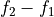
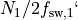
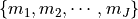
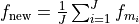
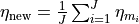
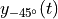
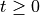
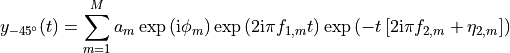
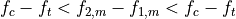
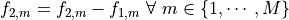

nmrespy.Estimator2DJ¶
- class nmrespy.Estimator2DJ(data, expinfo, datapath=None)[source]¶
Initialise a class instance.
- Parameters:
data (np.ndarray) – The data associated with the binary file in path.
datapath (Optional[Path]) – The path to the directory containing the NMR data.
expinfo (ExpInfo) – Experiment information.
- add_oscillators(params, index=-1, **estimate_kwargs)¶
Add oscillators to an estimation result.
Optimisation is carried out afterwards, on the updated set of oscillators.
- Parameters:
params (ndarray) –
The parameters of new oscillators to be added. Should be of shape
(n, 2 * (1 + self.dim)), wherenis the number of new oscillators to add. Even when one oscillator is being added this should be a 2D array, i.e.:params = oscillators = np.array([[a, φ, f, η]])
index (int) – The index of the result to edit. Index
0corresponds to the first result obtained using the estimator,1corresponds to the next, etc. By default, the most recently obtained result will be edited.estimate_kwargs – Keyword arguments to provide to the call to
estimate(). Note that"region",noise_region","initial_guess"and"region_unit"are set internally and will be ignored if given.
- Return type:
None
- property bf: Optional[Iterable[Optional[float]]]¶
Get the basic frequency (MHz).
- property bruker_params: Optional[dict]¶
Return a dictionary of Bruker parameters.
If the class instance was generated by
new_bruker(), a dictionary of experiment parameters will be returned. Otherwise,Nonewill be returned.
- property data: ndarray¶
Return the data associated with the estimator.
- property default_pts: Iterable[int]¶
Get default points associated with each dimension.
- property dim: int¶
Get number of dimensions in the experiment.
- estimate(region=None, noise_region=None, region_unit='ppm', initial_guess=None, method='gauss-newton', phase_variance=True, max_iterations=None, cut_ratio=1.1, mpm_trim=256, nlp_trim=1024, fprint=True, _log=True)[source]¶
Estimate a specified region in F2.
The basic steps that this method carries out are:
(Optional, but highly advised) Generate a frequency-filtered signal corresponding to the specified region.
(Optional) Generate an inital guess using the Matrix Pencil Method (MPM).
Apply numerical optimisation to determine a final estimate of the signal parameters
- Parameters:
region (Optional[Tuple[Union[float, int], Union[float, int]]]) – The frequency range of interest in F2. Should be of the form
(left, right)whereleftandrightare the left and right bounds of the region of interest. IfNone, the full signal will be considered, though for sufficently large and complex signals it is probable that poor and slow performance will be realised.noise_region (Optional[Tuple[Union[float, int], Union[float, int]]]) – If
regionis notNone, this must be of the form(left, right)too. This should specify a frequency range in F2 where no noticeable signals reside, i.e. only noise exists.region_unit (str) – One of
"hz"or"ppm". Specifies the units thatregionandnoise_regionhave been given as.initial_guess (Optional[Union[ndarray, int]]) – If
None, an initial guess will be generated using the MPM, with the Minimum Descritpion Length being used to estimate the number of oscilltors present. If and int, the MPM will be used to compute the initial guess with the value given being the number of oscillators. If a NumPy array, this array will be used as the initial guess.method (str) –
Specifies the optimisation method.
"exact"Uses SciPy’s trust-constr routine The Hessian will be exact."gauss-newton"Uses SciPy’s trust-constr routine The Hessian will be approximated based on the Gauss-Newton method"lbfgs"Uses SciPy’s L-BFGS-B routine.
phase_variance (bool) – Whether or not to include the variance of oscillator phases in the cost function. This should be set to
Truein cases where the signal being considered is derived from well-phased data.max_iterations (Optional[int]) – A value specifiying the number of iterations the routine may run through before it is terminated. If
None, the default number of maximum iterations is set (100ifmethodis"exact"or"gauss-newton", and500if"method"is"lbfgs").mpm_trim (Optional[int]) – Specifies the maximal size in the direct dimension allowed for the filtered signal when undergoing the Matrix Pencil. If
None, no trimming is applied to the signal. If an int, and the direct dimension filtered signal has a size greater thanmpm_trim, this signal will be set assignal[:, :mpm_trim].nlp_trim (Optional[int]) – Specifies the maximal size allowed in the direct dimension for the filtered signal when undergoing nonlinear programming. By default (
None), no trimming is applied to the signal. If an int, and the direct dimension filtered signal has a size greater thannlp_trim, this signal will be set assignal[:, :nlp_trim].fprint (bool) – Whether of not to output information to the terminal.
_log (bool) – Ignore this!
cut_ratio (Optional[float]) –
- find_spurious_oscillators(thold=None)[source]¶
Predict which oscillators are spurious.
This predicts the multiplet structures in the estimationm result, and then purges all oscillators which fall into the following criteria:
The oscillator is the only one in the multiplet.
The frequency in F1 is greater than
thold.
- Parameters:
thold (Optional[float]) – Frequency threshold within which  of the oscillators in a multiplet should agree. If
None, this is set to be - Returns:
A dictionary with int keys corresponding to result indices, and list
values corresponding to oscillators which are deemed spurious.
- Return type:
Dict[int, Iterable[int]]
- property fn_mode: str¶
Get acquisiton mode in indirect dimensions.
- classmethod from_pickle(path)¶
Load a pickled estimator instance.
- Parameters:
path (Union[str, Path]) – The path to the pickle file.
- Returns:
estimator
- Return type:
Estimator
Notes
Warning
From the Python docs:
“The pickle module is not secure. Only unpickle data you trust. It is possible to construct malicious pickle data which will execute arbitrary code during unpickling. Never unpickle data that could have come from an untrusted source, or that could have been tampered with.”
You should only use
from_pickle()on files that you are 100% certain were generated usingto_pickle(). If you load pickled data from a .pkl file, and the resulting output is not an instance ofEstimator, an error will be raised.See also
Estimator.to_pickle()
- get_errors(indices=None, merge=True, funit='hz', sort_by='f-1')¶
Return estimation result errors.
- Parameters:
indices (Optional[Iterable[int]]) – The indices of results to extract errors from. Index
0corresponds to the first result obtained using the estimator,1corresponds to the next, etc. IfNone, all results will be used.merge (bool) – If
True, a single array of all parameters from each specified estiamtion result specified will be returned. IfFalse, an iterable of each individual estimation result’s parameters will be returned.funit (str) – The unit to express frequencies in. Must be one of
"hz"and"ppm".sort_by (str) – Specifies the parameter by which the oscillators are ordered by. Should be one of
"a"for amplitudes"p"for phase,"f<n>"for frequency in the<n>-th dimension,"d<n>"for the damping factor in the<n>-th dimension. By setting<n>to-1, the final (direct) dimension will be used. For 1D data,"f"and"d"can be used to specify the frequency or damping factor.
- Return type:
Optional[Union[Iterable[ndarray], ndarray]]
- get_log()¶
Get the log for the estimator instance.
- Return type:
str
- get_params(indices=None, merge=True, funit='hz', sort_by='f-1')¶
Return estimation result parameters.
- Parameters:
indices (Optional[Iterable[int]]) – The indices of results to extract parameters from. Index
0corresponds to the first result obtained using the estimator,1corresponds to the next, etc. IfNone, all results will be used.merge (bool) – If
True, a single array of all parameters from each specified estiamtion result specified will be returned. IfFalse, an iterable of each individual estimation result’s parameters will be returned.funit (str) – The unit to express frequencies in. Must be one of
"hz"and"ppm".sort_by (str) – Specifies the parameter by which the oscillators are ordered by. Should be one of
"a"for amplitudes"p"for phase,"f<n>"for frequency in the<n>-th dimension,"d<n>"for the damping factor in the<n>-th dimension. By setting<n>to-1, the final (direct) dimension will be used. For 1D data,"f"and"d"can be used to specify the frequency or damping factor.
- Return type:
Optional[Union[Iterable[ndarray], ndarray]]
- get_results(indices=None)¶
Obtain a subset of the estimation results obtained.
By default, all results are returned, in the order in which they are obtained.
- Parameters:
indices (Optional[Iterable[int]]) – The indices of results to return. Index
0corresponds to the first result obtained using the estimator,1corresponds to the next, etc. IfNone, all results will be returned.- Return type:
Iterable[Result]
- get_shifts(pts=None, unit='hz', flip=True, meshgrid=True)¶
Construct chemical shifts which reflect the experiment parameters.
- Parameters:
pts (Optional[Iterable[int]]) – The number of points to construct the time-points with in each dimesnion. If
None, andself.default_ptsis a tuple of ints, it will be used.unit (str) – Must be
"hz","ppm".flip (bool) – If
True, the shifts will be returned in descending order, as is conventional in NMR. If False, the shifts will be in ascending order.meshgrid (bool) – If time-points are being derived for a N-dimensional signal (N > 1), setting this argument to
Truewill return N-dimensional arrays corresponding to all combinations of points in each dimension. plot/contour plot.
- Return type:
Iterable[ndarray]
- get_timepoints(pts=None, start_time=None, meshgrid=True)¶
Construct time-points which reflect the experiment parameters.
- Parameters:
pts (Optional[Iterable[int]]) – The number of points to construct the time-points with in each dimesnion. If
None, andself.default_ptsis a tuple of ints, it will be used.start_time (Optional[Iterable[Union[float, str]]]) – The start time in each dimension. If set to None, the initial point in each dimension with be
0.0. To set non-zero start times, a list of floats or strings can be used. If floats are used, they specify the first value in each dimension in seconds. Alternatively, strings of the formf'{N}dt', whereNis an integer, may be used, which indicates a cetain multiple of the difference in time between two adjacent points.meshgrid (bool) – If time-points are being derived for a N-dimensional signal (N > 1), setting this argument to
Truewill return N-dimensional arrays corresponding to all combinations of points in each dimension.
- Return type:
Iterable[ndarray]
- property latex_nuclei: Optional[Iterable[Optional[str]]]¶
Get the nuclei associated with each channel with for use in LaTeX.
>>> expinfo = ExpInfo(..., nuclei=("1H", "15N"), ...) >>> expinfo.latex_nuclei ('\textsuperscript{1}H', '\textsuperscript{15}N')
- make_fid(indices=None, pts=None, indirect_modulation=None)¶
Construct a noiseless FID from estimation result parameters.
- Parameters:
indices (Optional[Iterable[int]]) – The indices of results to extract errors from. Index
0corresponds to the first result obtained using the estimator,1corresponds to the next, etc. IfNone, all results will be used.pts (Optional[Iterable[int]]) – The number of points to construct the time-points with in each dimesnion. If
None, andself.default_ptsis a tuple of ints, it will be used.indirect_modulation (Optional[str]) –
Acquisition mode in indirect dimension of a 2D experiment. If the data is not 1-dimensional, this should be one of:
None-
"amp"- amplitude modulated pair:

"phase"- phase-modulated pair:

Nonewill lead to an array of shape(*pts).ampandphasewill lead to an array of shape(2, *pts).
- Return type:
ndarray
- merge_oscillators(oscillators, index=-1, **estimate_kwargs)¶
Merge oscillators in an estimation result.
Removes the osccilators specified, and constructs a single new oscillator with a cumulative amplitude, and averaged phase, frequency and damping. Then runs optimisation on the updated set of oscillators.
- Parameters:
oscillators (Iterable[int]) – A list of indices corresponding to the oscillators to be merged.
index (int) – The index of the result to edit. Index
0corresponds to the first result obtained using the estimator,1corresponds to the next, etc. By default, the most recently obtained result will be edited.estimate_kwargs – Keyword arguments to provide to the call to
estimate(). Note that"initial_guess"and"region_unit"are set internally and will be ignored if given.
- Return type:
None
Notes
Assuming that an estimation result contains a subset of oscillators denoted by indices , where
 , the new oscillator formed by the merging of the oscillator
subset will possess the following parameters prior to re-running estimation:
, the new oscillator formed by the merging of the oscillator
subset will possess the following parameters prior to re-running estimation:



- negative_45_signal(indices=None, pts=None)[source]¶
Generate the synthetic signal , where :


Producing this signal from parameters derived from estimation of a 2DJ dataset should generate a 1D homodecoupled spectrum.
- Parameters:
indices (Optional[Iterable[int]]) – The indices of results to include. Index
0corresponds to the first result obtained using the estimator,1corresponds to the next, etc. IfNone, all results will be included.pts (Optional[int]) – The number of points to construct the signal from. If
None,self.default_ptswill be used.
- Return type:
ndarray
- classmethod new_synthetic_from_simulation(spin_system, sweep_widths, offset, pts, channel='1H', f2_unit='ppm', snr=30.0, lb=None)[source]¶
Generate an estimator with data derived from a J-resolved experiment simulation.
Simulations are performed using nmr_sims.experiments.jres.JresEstimator.
- Parameters:
spin_system (SpinSystem) – Specification of the spin system to run simulations on. See here for more details.
sweep_widths (Tuple[float, float]) – The sweep width in each dimension. The first element, corresponding to F1, should be in Hz. The second element, corresponding to F2, should be expressed in the unit which corresponds to
f2_unit.offset (float) – The transmitter offset. The value’s unit should correspond with
f2_unit.pts (Tuple[int, int]) – The number of points sampled in each dimension.
channel (Union[str, Nucleus]) – Nucleus targeted in the experiment simulation. ¹H is set as the default. See here for more information.
f2_unit (str) – The unit that the sweep width and transmitter offset in F2 are given in. Should be either
"ppm"(default) or"hz".snr (Optional[float]) – The signal-to-noise ratio of the resulting signal, in decibels.
Noneproduces a noiseless signal.lb (Optional[Tuple[float, float]]) – The damping (line-broadening) factor applied to the simulated FID. By default, this will be set to ensure that the final point in each dimension in scaled to be 1/1000 of it’s un-damped value.
- Return type:
- property nuclei: Optional[Iterable[Optional[str]]]¶
Get the nuclei associated with each channel.
- offset(unit='hz')¶
Get the transmitter offset frequency.
- Parameters:
unit (str) – Must be
"hz"or"ppm".- Return type:
Iterable[float]
- predict_multiplets(thold=None)[source]¶
Predict the estimated oscillators which correspond to each multiplet in the signal.
- Parameters:
thold (Optional[float]) –
Frequency threshold. All oscillators that make up a multiplet are assumed to obey the following expression:

where
 is the central frequency of the multiplet, and f_t is
is the central frequency of the multiplet, and f_t is
thold- Return type:
Iterable[Iterable[int]]
- remove_oscillators(oscillators, index=-1, **estimate_kwargs)¶
Remove oscillators from an estimation result.
Optimisation is carried out afterwards, on the updated set of oscillators.
- Parameters:
oscillators (Iterable[int]) – A list of indices corresponding to the oscillators to be removed.
index (int) – The index of the result to edit. Index
0corresponds to the first result obtained using the estimator,1corresponds to the next, etc. By default, the most recently obtained result will be edited.estimate_kwargs – Keyword arguments to provide to the call to
estimate(). Note that"initial_guess"and"region_unit"are set internally and will be ignored if given.
- Return type:
None
- remove_spurious_oscillators(thold=None, **estimate_kwargs)[source]¶
Attempt to remove spurious oscillators from the estimation result.
See
find_spurious_oscillators()for information on how spurious oscillators are predicted.Oscillators deemed spurious are removed using
remove_oscillators().- Parameters:
thold (Optional[float]) – Frequency threshold within which of the oscillators in a multiplet should agree. If
None, this is set to beestimate_kwargs – Keyword arguments to provide to
remove_oscillators(). Note that"initial_guess"and"region_unit"are set internally and will be ignored if given.
- Return type:
None
- save_log(path='./espy_logfile', force_overwrite=False, fprint=True)¶
Save the estimator’s log.
- Parameters:
path (Union[str, Path]) – The path to save the log to.
force_overwrite (bool) – If
pathalready exists,force_overwriteset toTruewill get the user to confirm whether they are happy to overwrite the file. IfFalse, the file will be overwritten without prompt.fprint (bool) – Specifies whether or not to print infomation to the terminal.
- Return type:
None
- property sfo: Optional[Iterable[Optional[float]]]¶
Get the transmitter frequency (MHz).
- sheared_signal(indices=None, pts=None, indirect_modulation=None)[source]¶
Return an FID where direct dimension frequencies are perturbed such that:

This should yeild a signal where all components in a multiplet are centered at the spin’s chemical shift in the direct dimenion, akin to “shearing” 2DJ data.
- Parameters:
indices (Optional[Iterable[int]]) – The indices of results to include. Index
0corresponds to the first result obtained using the estimator,1corresponds to the next, etc. IfNone, all results will be included.pts (Optional[Tuple[int, int]]) – The number of points to construct the signal from. If
None,self.default_ptswill be used.indirect_modulation (Optional[str]) –
Acquisition mode in indirect dimension of a 2D experiment. If the data is not 1-dimensional, this should be one of:
None-"amp"- amplitude modulated pair:
"phase"- phase-modulated pair:
Nonewill lead to an array of shape(*pts).ampandphasewill lead to an array of shape(2, *pts).
- Return type:
ndarray
- split_oscillator(oscillator, index=-1, separation_frequency=None, unit='hz', split_number=2, amp_ratio=None, **estimate_kwargs)¶
Splits an oscillator in an estimation result into multiple oscillators.
Removes an oscillator, and incorporates two or more oscillators whose cumulative amplitudes match that of the removed oscillator. Then runs optimisation on the updated set of oscillators.
- Parameters:
oscillator (int) – The index of the oscillator to be split.
index (int) – The index of the result to edit. Index
0corresponds to the first result obtained using the estimator,1corresponds to the next, etc. By default, the most recently obtained result will be edited.separation_frequency (Optional[Iterable[float]]) – The frequency separation given to adjacent oscillators formed from the splitting. If
None, the splitting will be set tosw / nin each dimension whereswis the sweep width andnis the number of points in the data.unit (str) – The unit that
separation_frequencyis expressed in.split_number (int) – The number of peaks to split the oscillator into.
amp_ratio (Optional[Iterable[float]]) – The ratio of amplitudes to be fulfilled by the newly formed peaks. If a list,
len(amp_ratio) == split_numbermust be satisfied. The first element will relate to the highest frequency oscillator constructed, and the last element will relate to the lowest frequency oscillator constructed. If None, all oscillators will be given equal amplitudes.estimate_kwargs – Keyword arguments to provide to the call to
estimate(). Note that"initial_guess"and"region_unit"are set internally and will be ignored if given.
- Return type:
None
- subband_estimate(noise_region, noise_region_unit='hz', nsubbands=None, method='gauss-newton', phase_variance=True, max_iterations=None, cut_ratio=1.1, mpm_trim=128, nlp_trim=256, fprint=True, _log=True)[source]¶
Perform estiamtion on the entire signal via estimation of frequency-filtered sub-bands.
This method splits the signal up into
nsubbandsequally-sized regions in the direct dimension and extracts parameters from each region before finally concatenating all the results together.- Parameters:
noise_region (Tuple[float, float]) – Specifies a direct dimension frequency range where no noticeable signals reside, i.e. only noise exists.
noise_region_unit (str) – One of
"hz"or"ppm". Specifies the units thatnoise_regionhave been given in.nsubbands (Optional[int]) – The number of sub-bands to break the signal into. If
None, the number will be set as the nearest integer to the data size divided by 500.method (str) –
Specifies the optimisation method.
"exact"Uses SciPy’s trust-constr routine The Hessian will be exact."gauss-newton"Uses SciPy’s trust-constr routine The Hessian will be approximated based on the Gauss-Newton method"lbfgs"Uses SciPy’s L-BFGS-B routine.
phase_variance (bool) – Whether or not to include the variance of oscillator phases in the cost function. This should be set to
Truein cases where the signal being considered is derived from well-phased data.max_iterations (Optional[int]) – A value specifiying the number of iterations the routine may run through before it is terminated. If
None, the default number of maximum iterations is set (100ifmethodis"exact"or"gauss-newton", and500if"method"is"lbfgs").mpm_trim (Optional[int]) – Specifies the maximal size in the direct dimension allowed for the filtered signal when undergoing the Matrix Pencil. If
None, no trimming is applied to the signal. If an int, and the filtered signal has a direct dimension size greater thanmpm_trim, this signal will be set assignal[:, :mpm_trim].nlp_trim (Optional[int]) – Specifies the maximal size allowed in the direct dimension for the filtered signal when undergoing nonlinear programming. If
None, no trimming is applied to the signal. If an int, and the filtered signal has a direct dimension size greater thannlp_trim, this signal will be set assignal[:, :nlp_trim].fprint (bool) – Whether of not to output information to the terminal.
_log (bool) – Ignore this!
cut_ratio (Optional[float]) –
- Return type:
None
- sw(unit='hz')¶
Get the sweep width.
- Parameters:
unit (str) – Must be
"hz"or"ppm".- Return type:
Iterable[float]
- to_pickle(path=None, force_overwrite=False, fprint=True)¶
Save the estimator to a byte stream using Python’s pickling protocol.
- Parameters:
path (Optional[Union[str, Path]]) – Path of file to save the byte stream to. ‘.pkl’ is added to the end of the path if this is not given by the user. If
None,./estimator_<x>.pklwill be used, where<x>is the first number that doesn’t cause a clash with an already existent file.force_overwrite (bool) –
Defines behaviour if the specified path already exists:
If
force_overwriteis set toFalse, the user will be prompted if they are happy overwriting the current file.If
force_overwriteis set toTrue, the current file will be overwritten without prompt.
fprint (bool) – Specifies whether or not to print infomation to the terminal.
- Return type:
None
See also
Estimator.from_pickle()
- property unicode_nuclei: Optional[Iterable[Optional[str]]]¶
Get the nuclei associated with each channel with superscript numbers.
>>> expinfo = ExpInfo(..., nuclei=("1H", "15N"), ...) >>> expinfo.unicode_nuclei ('¹H', '¹⁵N')
- view_data(domain='freq', abs_=False)[source]¶
View the data.
- Parameters:
domain (str) – Must be
"freq"or"time".abs – Whether or not to display frequency-domain data in absolute-value mode.
abs_ (bool) –
- Return type:
None
- write_result(indices=None, path='./nmrespy_result', fmt='txt', description=None, sig_figs=5, sci_lims=(-2, 3), integral_mode='relative', force_overwrite=False, fprint=True, pdflatex_exe=None)¶
Write estimation results to text and PDF files.
- Parameters:
indices (Optional[Iterable[int]]) – The indices of results to include. Index
0corresponds to the first result obtained using the estimator,1corresponds to the next, etc. IfNone, all results will be included.path (Union[Path, str]) – Path to save the result file to.
fmt (str) – Must be one of
"txt"or"pdf".description (Optional[str]) – A description to add to the result file.
sig_figs (Optional[int]) – The number of significant figures to give to parameters. If
None, the full value will be used.sci_lims (Optional[Tuple[int, int]]) – Given a value
(-x, y), for intsxandy, any parameterpwith a value which satisfiesp < 10 ** -xorp >= 10 ** ywill be expressed in scientific notation, rather than explicit notation. IfNone, all values will be expressed explicitely.integral_mode (str) – One of
"relative"or"absolute". With"relative", the smallest integral will be set to1, and all other integrals will be scaled accordingly. With"absolute", the absolute integral will be computed. This should be used if you wish to directly compare different datasets.force_overwrite (bool) – If the file specified already exists, and this is set to
False, the user will be prompted to specify that they are happy overwriting the current file.fprint (bool) – Specifies whether or not to print information to the terminal.
pdflatex_exe (Optional[Union[str, Path]]) –
The path to the system’s
pdflatexexecutable.Note
You are unlikely to need to set this manually. It is primarily present to specify the path to
pdflatex.exeon Windows when the NMR-EsPy GUI has been loaded from TopSpin.
- Return type:
None